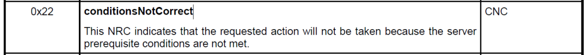

开心果 Need Car · 2025-11-03T06:22:00+08:00 · 微信原文
1、Rationality Checks

之所以进行Rationality Checks，主要是确保敏感诊断服务只能在“已知且安全”的车辆状态下执行，从而防止误操作或恶意滥用。
既然合理性检查依赖车辆状态的判断，那么，车辆状态主要来源有哪些呢？一般来说，车辆状态可以由以下来源：
直接传感器输入（如：轮速传感器）
带有真实性和完整性保障的串行通信数据（如: CAN的SecOC信号）
来自安全网络通信或传感器的内部派生值
......
（二）合理性检查的条件
不同的场景下，合理性检查的条件有所不同。以0x2E（WriteDataByIdentifierservice）服务为例，可能的合理性检查条件有：
车速（Vehicle_Speed） ≤ 3 km/h
动力系统激活状态（Propulsion_System_Active）= False
......
可以看出，合理性检查需要确保车辆状态的处于安全状态，不能对操作人员造成伤害。
进一步的延伸，既然某些车辆状态来源于总线信号，那么，总线信号的有效性是否需要进一步确认？这个问题首先需要明确目标ECU是否支持安全通信（Secure Communication），如果支持安全通信，对诸如车速信号进行安全认证，确保数据来源的真实性（Authenticity）和完整性（Integrity）是有必要的。
（三）Rationality Checks和SecurityAccess区别
注意，Rationality Checks不能等同于SecurityAccess，两者的区别如下：
往期精彩回顾